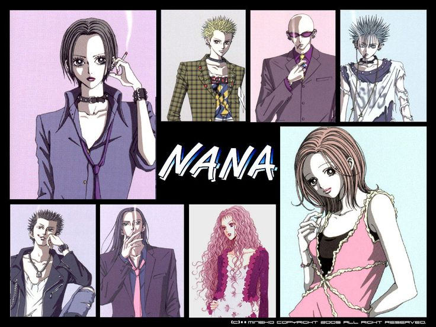

Trailer :
Genres :
- Drame et Romance
- Musique
- Slice of Life
- Comédie
- Psychologique
Synopsis :
Deux jeunes femmes de 20 ans prénommées Nana se rencontrent par hasard dans un train pour Tokyo et décident de devenir colocataires dans l'appartement 707.
Nana Komatsu, surnommée « Hachi », est une jeune fille naïve et romantique qui suit son petit ami, tandis que Nana Osaki est une chanteuse de punk rock déterminée à réussir sa carrière musicale et à retrouver son ancien amour.
Alors que leurs vies s'entremêlent, elles se soutiennent mutuellement à travers les joies et les peines de l'amour, de l'amitié et de la vie d'adulte dans la capitale.
Cependant, leurs rêves et leurs relations seront mis à l'épreuve par les réalités impitoyables du monde du spectacle et les complexités du cœur humain.
Personnages :
Nana Komatsu
Nana Komatsu (surnommée « Hachi ») est une jeune femme naïve, émotive et dépendante affectivement, qui cherche désespérément le grand amour et une stabilité familiale. Elle est souvent qualifiée de « fashion victim » et manque de maturité, mais son cœur sincère et sa capacité à aimer profondément touchent son entourage. Son surnom « Hachi » (en référence au chien fidèle Hachiko) lui est donné par Nana Osaki pour la distinguer d'elle-même.
Nana Osaki
Nana Osaki est une chanteuse de punk rock charismatique, fière et farouchement indépendante, qui cache une grande vulnérabilité derrière une apparence froide et rebelle. Marquée par un passé solitaire, elle refuse de se laisser dominer et place sa carrière musicale et son intégrité au-dessus de tout, même de ses sentiments. Son style gothique et son attitude « lone wolf » en font une figure de force, bien qu'elle lutte intérieurement contre la peur de l'abandon.
Ren Honjo
Ren Honjo est un musicien talentueux au charisme magnétique, connu pour sa beauté androgyne et son calme mystérieux qui fascine autant qu'il inquiète. Introverti et mélancolique, il porte en lui une sensibilité d'artiste et des démons intérieurs qui le poussent parfois à s'isoler de ceux qu'il aime le plus. Son lien profond avec la musique et son passé complexe font de lui une âme tourmentée cherchant désespérément sa place.
Takumi Ichinose
Takumi Ichinose est un leader pragmatique, froid et extrêmement ambitieux, qui place la réussite de son groupe et sa vision artistique au-dessus des considérations émotionnelles. Doté d'une intelligence stratégique redoutable et d'un sang-froid imperturbable, il n'hésite pas à manipuler les situations et les gens pour atteindre ses objectifs. Derrière son cynisme apparent se cache une détermination inébranlable forgée par un passé familial difficile.
Shinichi Okazaki
Shinichi Okazaki (dit Shin) est un adolescent de 15 ans au look provocateur (nombreux piercings, cheveux teints) qui dissimule une maturité et une lucidité surprenantes pour son âge. Bien qu'il adopte une attitude détachée et parfois cynique suite à un passé familial douloureux, il possède une intuition aiguë des gens et une grande sensibilité cachée. Son rôle de bassiste lui permet d'exprimer un talent musical précoce, tandis qu'il navigue entre un monde d'adultes et sa propre quête d'identité.
Nobuo Terashima
Nobuo Terashima (dit Nobu) est le guitariste loyal et passionné des Black Stones, connu pour son franc-parler, son énergie débordante et son dévouement sans faille envers ses amis. Il cache des sentiments profonds et non réciproques derrière une attitude parfois immature et jalouse, mais reste le pilier émotionnel et constant du groupe. Son honnêteté brute et sa capacité à aimer sincèrement en font un personnage attachant, bien qu'il souffre souvent en silence.
Anime :
Saison 1 :
50 épisodes
Manga :
Nombre total de tomes : 21
Statut : en hiatus depuis 2009
Auteur : Ai Yazawa
Note :
9.5/10
Commentaire :
Trop banger ! Les persos sont déjà bien développés, les musiques sont incroyables, la DA est trop classe, que des péripéties !